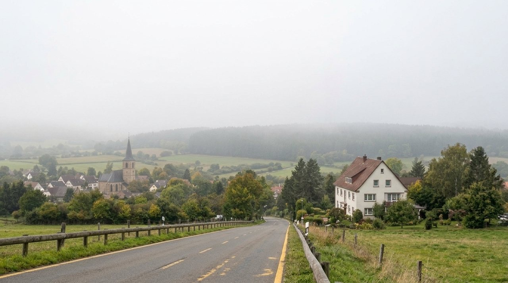

Illustrative camera view
SIMULATEDFixed scene

Landmark viewExample only
Dashboard concept 01
A possible way to explain which known scene proxies were detected and how they map to the mock-scene demo estimate.

Demo mapping
Neither cup nor bottle detected
0 mNearer proxy detected
500 mFurthest proxy; cup may or may not be detected
1000 m